기계설계산업기사 (2009-03-01 기출문제)
1과목: 기계가공법 및 안전관리
1. 슬로터를 이용한 가공이 아닌 것은?
- 내경 키 홈(Key way)
- 내경 스플라인(spline)
- 세레이션(serration)
- 나사(thread)
(정답률: 64%)

2. 연삭 솟돌의 3요소가 아닌 것은?
- 입자
- 결합제
- 입도
- 기공
(정답률: 59%)
3. 수평 밀링에 대한 설명이 아닌 것은?
- 주축은 기둥 상부에 수평으로 설치한다.
- 스핀들 헤드는 고정형 및 상하 이동형, 필요한 각도로 경사시킬 수 있는 경사형 등이 있다.
- 주축에 아버를 고정하고 회전시켜 가공물을 절삭한다.
- 공작물은 전후, 좌우, 상하 3방향으로 이동한다.
(정답률: 46%)
4. 테이퍼 플러그 게이지(taper plug gage)의 측정에서 그림과 같이 정반위에 놓고 핀을 이용해서 측정하려고 한다. M을 구하는 식은?
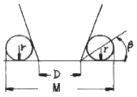
- M=D+2r+2r×cot β
- M=D+r+r×cot β
- M=D+2r+2r×tan β
- M=D+r+r×tan β
(정답률: 52%)
5. 선반에서 지름 102mm인 환봉을 300rpm으로 가공할 때 절삭 저항력이 100kg이었다. 이 때 선반의 절삭효율을 75%라 하면 절삭 동력은 약 몇 KW인가?
- 1.4
- 2.1
- 3.6
- 5.4
(정답률: 49%)
6. 미소분말을 초고온(2000℃), 초고압(5만 기압 이상)에서 소결하여 만든 인공합성 절삭공구 재료로 뛰어난 내열성과 내마모성으로 인하여 난삭재료, 담금질강, 고속도강, 내열강 등의 절삭에 많이 사용되고 있는 것은?
- CBN 공구
- 다이아몬드 공구
- 서멧 공구
- 세라믹 공구
(정답률: 33%)
7. 공작기계로 가공된 평탄한 면을 더욱 정밀하게 다듬질 하는 공구로 공작기계의 베트, 미끄러면, 측정용 정밀정반 등 최종 마무리 가공에 사용되는 수공구는?
- 리머
- 정
- 다이스
- 스크레이퍼
(정답률: 58%)
8. CNC 선반(수치제어선반)에 대한 설명이 잘못된 것은?
- 좌표치의 지령방식에는 절대지령과 증분지령이 있고 한 블록에 2가지를 혼합하여 지령할 수 없다.
- 축은 공구대가 전후 좌우의 2방향으로 이동하므로 2축을 사용한다.
- Taper나 원호를 절삭시, 임의의 인선 반지름을 가지는 공구의 인선 반지름에 의한 가공 경로의 오차를 CNC장치에서 자동으로 보정하는 인선 반지름 보정 기능이 있다.
- 휴지(Dwell)r기능은 지정한 시간 동안 이송이 정지되는 기능을 의미한다.
(정답률: 61%)
9. 선반의 주축을 중공축으로 한 이유에 속하지 않는 것은?
- 무게를 감소하여 베어링에 작용하는 하중을 줄이기 위하여
- 긴 가공물 고정이 편리하게 하기 위하여
- 지름이 큰 재료의 테이퍼를 깍기 위하여
- 굽힘과 비틀림 응력의 강화를 위하여
(정답률: 49%)
10. 비트리 파이드계 연삭숫돌로 내경 연삭을 할 때 일반적으로 공작물의 원주 속도는 몇 m/min인가? (단, 이 값은 공작물의 재질 등에 따라 일정하지 않다.) (문제 오류로 실제 시험에서는 모두 정답처리 되었습니다. 여기서는 1번을 누르면 정답 처리 됩니다.)
- 100~300
- 300~600
- 600~1800
- 1600~2000
(정답률: 65%)
11. 다이얼 게이지는 어떤 측정기에 속하는가?
- 전장 측정기
- 단면 측정기
- 비교 측정기
- 각도 측정기
(정답률: 71%)
12. 공작물을 화학반응을 통하여 가공하는 화학적 가공의 특징으로 틀린 것은?
- 강도나 경도에 관계 없이 사용할 수 있다.
- 가공경화 또는 표면변질 층이 생긴다.
- 복잡한 형상과 관계없이 표면 전체를 한번에 가공할 수 있다.
- 한번에 여러 개를 가공할 수 있다.
(정답률: 39%)
13. 드릴 머신으로 얇은 철판에 구멍을 뚫을 때, 공작물 보조 받침대로 가장 좋은 것은 무엇인가?
- 구리판
- 강철판
- 나무판
- 니켈판
(정답률: 80%)
14. 절삭공구를 육각형 모양의 드럼(drum)에 가공 공정 순서대로 장착하고 동일 치수의 제품을 대량생산하고자 한다. 이 때 사용하는 공작기계로 가장 적합한 것은?
- 탁상선반
- 정면선반
- 수직선반
- 터릿선반
(정답률: 65%)
15. 길이가 2m인 어떤 물체의 온도가 2℃ 상승하였을 시 온도 변화에 따른 길이 변화량은 몇 μm인가? (단, 물체의 열팽창 계수는 11.3×10-6/℃이다.)
- 2.8
- 11.3
- 28
- 45.2
(정답률: 30%)
16. 작업장에서 무거운 짐을 들고 운반 작업을 할 때의 설명으로 틀린 것은?
- 짐은 가급적 몸 가까이 가져온다.
- 가능한 상체를 곧게 세우고 등을 반듯이 하여 들어 올린다.
- 짐을 들어올릴 때 충격이 없어야 한다.
- 짐을 무릎을 굽힌 자세에서 들고 편 자세에서 내려 놓는다.
(정답률: 80%)
17. 절삭유제에 대한 설명 중 옳은 것은?
- 마찰계수가 높고 표면장력이 커야 한다.
- 공구의 인선을 냉각시켜 공구의 경도 저하를 방지한다.
- 식물유는 냉각효과가 우수하므로 고속 다듬질 절삭에 좋다.
- 광(물)유는 윤활작용이 좋고 냉각성이 크다.
(정답률: 57%)
18. 응급 처치시 유의 사항에 위배되는 것은?
- 긴급을 요하는 환자가 2인 이상 발생하였을 경우에는 대출혈, 중독 등의 환자보다 심한 소리와 행동을 나타내는 환자를 우선 처치하여야 한다.
- 충경방지를 위하여 환자의 체온유지에 노력하여야 한다.
- 응급 의료진과 가족에게 연락하고, 주위 사람에게 도움을 청해야 한다.
- 의식불명 환자에세 물 등 기타의 음료수를 먹이지 말아야 한다.
(정답률: 79%)
19. 브로칭 머신에 사용하는 절삭공구 브로치의 피치 간격을 일정하게 하지 않는 이유는?
- 난삭재 가공
- 떨림 발생 방지
- 가공시간 단축
- 칩 처리용이
(정답률: 60%)
20. 선반에서 양센터 작업시 주축의 회전을 공작물에 전달하기 위하여 사용되는 것은?
- 센터 드릴(center drill)
- 돌리개(lathe dog)
- 명판(face pIate)
- 방진구(work rest)
(정답률: 71%)
2과목: 기계제도
21. 그림에 나타난 볼트는 고정하는 방법에 따라 분류할 때 어느 볼트에 해당하는가?
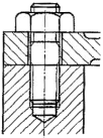
- 관통볼트
- 탭볼트
- 스터드볼트
- 기초볼트
(정답률: 52%)
22. 보기와 같이 경사지게 잘린 사각뿔의 전개도로 가장 적합한 형상은?
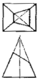
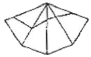
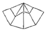
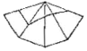
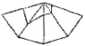
(정답률: 52%)
23. 모양 및 위치의 정밀도 허용값을 도시한 것 중 올바르게 나타낸 것은?
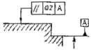
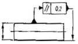
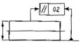
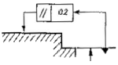
(정답률: 62%)
24. 나사의 종류로 표시하는 기호 중 미터 사다리꼴 나사의 기호는?
- M
- SM
- TM
- Tr
(정답률: 65%)
25. 그림과 같은 부등변 형강의 치수 표시기호로 옳은 것은?
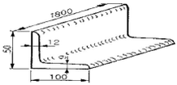
- L 100×9×12-1800
- L 1800-100×50×9/12
- L 50×100-1800×9/12
- L 50×100×12×9-1800
(정답률: 77%)
26. ø45 축에 대한 공차 치수 중 축의 최대 허용치수가 가장 큰 것은?
- ø45 g7
- ø45 h7
- ø45 n7
- ø45 m7
(정답률: 45%)
27. 재료 기호가 “STD 10"으로 표기되어 있을 경우 이 재료는 KS에서 무슨 재료인가?
- 기계 구조용 합금강 강재
- 탄소 공구강 강재
- 기계 구조용 탄소 강재
- 합금 공구강 강재
(정답률: 59%)
28. 스케치도에 관한 설명으로 틀린 것은?
- 측정한 치수를 기입한다.
- 프리 핸드로 그린다.
- 재질 및 가공법은 기입할 필요가 없다.
- 제작도로 대신 사용하기도 한다.
(정답률: 50%)
29. 최소 죔새를 나타낸 것은? (단, 조립 전 치수를 기준으로 한다.)
- 구멍의 최대 허용치수-축의 최소 허용치수
- 축의 최소 허용치수-구멍의 최대 허용치수
- 축의 최대 허용치수-구멍의 최소 허용치수
- 구멍의 최소 허용치수-축의 최대 허용치수
(정답률: 52%)
30. 호칭번호가 6900인 베어링을 올바르게 설명한 것은?
- 안지름이 12mm인 원통 롤러 베어링
- 안지름이 12mm인 자동조심 볼 베어링
- 안지름이 12mm인 단열 깊은 홈 볼 베어링
- 안지름이 12mm인 니들 롤러 베어링
(정답률: 42%)
31. 용접 기호 중에서 필릿 용접 기호는?
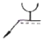
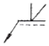
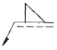
(정답률: 85%)
32. 보기 입체도를 3각법으로 투상한 도면으로 올바른 것은?
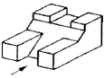
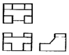
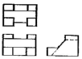
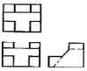
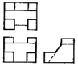
(정답률: 52%)
33. 나사의 표시법 중 관용 평행나사 A급을 표시하는 방법으로 옳은 것은?
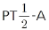
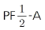
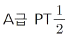
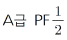
(정답률: 36%)
34. 그림과 같이 외경 50mm인 파이프를 용접기호와 같이 용접했을 때 총 용접선의 길이는?
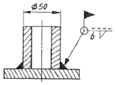
- 약 50mm
- 약 157mm
- 약 100mm
- 약 142mm
(정답률: 49%)
35. 표면의 결 도시방법에서 가공에 의한 커터 줄무늬 방향이 기입한 면의 중심에 대하여 대략 동심원 모양일 때 기호는?
- X
- M
- C
- R
(정답률: 69%)
36. 아래 그림에 표시된 공차를 올바르게 설명한 것은?
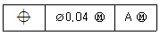
- 데이텀 형체에 최대 실체 공차가 적용
- 치수에 최소 실체 공차가 적용
- 동축도 공차로 최대 실체 공차를 적용
- 진원도 공차로 최소 실체 공차로 적용
(정답률: 60%)
37. 다음 도면에서 A~D선의 용도에 으한 명칭이 잘못된 것은?
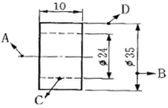
- A:중심선
- B:치수선
- C:숨은선(은성)
- D:지시선
(정답률: 81%)
38. 파이프 상단 중앙에 드릴 구멍을 뚫은 보기와 같은 정면도를 보고 우측면도를 작성했을 때 다음 중 가장 적합한 것은?
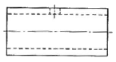
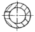
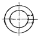
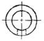
(정답률: 79%)
39. 아래의 입체도에서 화살표 방향을 정면도로 할 경우 평면도로 올바른 것은?
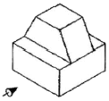
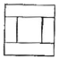
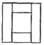
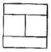
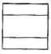
(정답률: 71%)
40. 나사의 제도방법을 설명한 것으로 틀린 것은?
- 수나사에서 골 지름은 가는 실선으로 도시한다.
- 불완전 나사부를 나타내는 골지름 선은 축선에 대해서 평행하게 표시한다.
- 암나사의 측면도에서 호칭 경에 해당하는 선은 가는 실선이다.
- 완전나사부란 산봉우리와 골 밑 모양의 양쪽 모두 완전한 산형으로 이루어지는 나사부이다.
(정답률: 50%)
3과목: 기계설계 및 기계재료
41. 다음 중 조직이 펄라이트와 시멘타이트로 이루어진 강은?
- 연강
- 과공석강
- 아공석강
- 공석강
(정답률: 36%)
42. 합금강에서 합금 원소의 함유량이 많아지면 내식성, 내열성 및 자경성을 크게 증가시키며 탄화물을 만들기 쉽고, 내마멸성이 커지게 하는 원소는?
- W
- V
- Ni
- Cr
(정답률: 42%)
43. 탄소강은 일반적으로 충격치가 천이온도에 도달하면 급격히 감소되어 취성이 생기는데 이 취성을 무엇이라 하는가?
- 저온취성
- 청열취성
- 뜨임취성
- 적열취성
(정답률: 28%)
44. 배빗 메탈(babbit metal)의 주요성분으로 옳은 것은?(복원 오류로 보기 내용이 정확하지 않습니다. 1번 4번 보기 내용이 같습니다. 정확한 보기 내용을 아시는분 께서는 오류 신고를 통하여 내용 작성 부탁드립니다. 정답은 1번 입니다.)
- Sn-Pb-Cu
- Sn-Sb-Zn
- Sn-Pb-Si
- Sn-Pb-Cu
(정답률: 71%)
45. 다음 중 합금공구강의 KS 분류기호로 옳은 것은?
- STC
- SC
- STS
- GCD
(정답률: 58%)
46. 금반지를 18(K)금으로 만들었다. 순금(Au)은 몇 %가 함유된 것인가?
- 18
- 34
- 75
- 92
(정답률: 63%)
47. 금속의 공통적인 특성을 설명한 것으로 틀린 것은?
- 연성 및 전성이 좋다.
- 금속 고유의 광택을 갖는다.
- 열과 전기의 부도체이다.
- 고체 상태에서 결정 구조를 갖는다.
(정답률: 77%)
48. Cu-Sn의 평행상태도에서 γ상이 520℃에서 일으키는 변태는 어떤 변태인가?
- 포점변태
- 포석변태
- 공정변태
- 공석변태
(정답률: 34%)
49. 다음 중 기계구조용 탄소강 SM45C의 탄소함유량으로 가장 적당한 것은?
- 0.02~2.01%
- 0.04~0.⑤%
- 0.32~0.38%
- 0.42~0.48%
(정답률: 63%)
50. 다음 금속 중 자기 변태점이 없는 것은?
- Fe
- Ni
- Co
- Zn
(정답률: 48%)
51. 원통형 커플링(cylindrical coupling)의 종류에 해당하지 않는 것은?
- 플랜지 커플링
- 머프 커플링
- 마찰원통 커플링
- 셀러 커플링
(정답률: 35%)
52. 그림에서 기어 A의 잇수 ZA=30, 기어 B의 잇수 ZB=20이라 할 때 A를 고정하고 암 H를 시계방향(+)으로 2회전시킬 때 B는 약 몇 회전하는가? (단, 시계방향을 +, 반시계방향읋 -로 한다.)
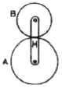
- +1.3
- -3
- -1.3
- +3
(정답률: 40%)
53. 피치원 지름이 무한대인 기어는?
- 랙(rack) 기어
- 헬리컬(helical) 기어
- 스퍼(spur) 기어
- 나사(screw) 기어
(정답률: 59%)
54. 96000 Nㆍcm 토크를 전달하는 지름 50mm인 축에 적합한 묻힘 키(폭×높이=12mm×8mm)의 길이는 약 몇 mm 이상이어야 하나? (단, 키의 전단강도만으로 계산하고, 키의 허용전단응력 τ=8000N/cm2이다.)
- 40mm
- 50mm
- 5mm
- 4mm
(정답률: 23%)
55. 안전율에 대한 설명으로 틀린 것은?
- 안전율은 항상 1보다 큰 값을 갖는다.
- 재료의 허용응력에 대한 기준강도의 비이다.
- 재료의 허용응력에 기준강도보다 반드시 커야 한다.
- 충격하중은 정하중보다 안전율을 크게 한다.
(정답률: 34%)
56. 임의 점에서 직선거리 L만큼 떨어진 곳에서 힘 F가 수직하게 작용할 때 발생하는 모멘트 M을 바르게 나타낸 것은?
- M=F×L
- M=F/L
- M=L/F
- M=F+L
(정답률: 58%)
57. 길이가 100mm인 봉이 인장 응력을 받았을 때 변형률이 1이라면 변형 후의 전체 길이는?
- 50mm
- 100mm
- 150mm
- 200mm
(정답률: 33%)
58. 국제단위계(SI)에서 기본단위에 해당하지 않는 것은?
- 질량(kg)
- 평면각(rad)
- 전류(A)
- 광도(cd)
(정답률: 38%)
59. 베어링 번호가 No. 6206인 롤링베어링의 안지름은?
- 6mm
- 20mm
- 30mm
- 40mm
(정답률: 77%)
60. 두 물체 사이의 거리를 일정하게 유지시키면서 결합하는데 사용하는 볼트는?
- 아이 볼트
- 스테이 볼트
- T 볼트
- 리머 볼트
(정답률: 62%)
4과목: 컴퓨터응용설계
61. 공간상에서 선을 이용하여 3차원 물체를 표시하는 와이어 프레임 모델의 특징을 설명한 것 중 틀린 것은?
- 3면 투시도 작성이 용이하다.
- 단면도 작성이 불가능하다.
- 물리적 성질의 계산이 가능하다.
- 은선제거가 불가능하다.
(정답률: 74%)
62. 타원체면(ellipsoid)에 대한 방정식이 맞게 표현된 것은? (단, a, b, c, r은 상수이다.)
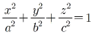
- x2+y2+z2=a2+b2+c2
- x2+y2+z2=r2
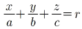
(정답률: 35%)
63. 중앙처리장치(CPU)의 구성요소가 아닌 것은?
- 제어장치
- 연산장치
- 입ㆍ출력장치
- 주기억장치
(정답률: 64%)
64. x2+y2+z2-4x+6y-10z+2=0인 방정식으로 표현되는 구의 중심점과 반지름은 각각 얼마인가?
- 중심(-2, 3, -5), 반지름:6
- 중심(2, -3, 5), 반지름:6
- 중심(-4, 6, -10), 반지름:2
- 중심(4, -6, 10), 반지름:2
(정답률: 36%)
65. 메뉴의 선택이나 위치 또는 좌표값의 입력 등 그래픽 작업을 신속하고 손쉽게 할 수 있도록 하는 입력장치가 아닌 것은?
- 라이트펜(Light pen)
- 조이스틱(Joystick)
- 하드카피(Hard copy)
- 마우스(Mouse)
(정답률: 69%)
66. 비트(bit)에 대한 설명으로 틀린 것은?
- 컴퓨터에서 데이터를 나타내는 최소 단위이다.
- 0과 1을 동시에 나타내는 정보 단위이다.
- binary digit의 약자이다.
- 2진수로 표시된 정보를 나타내기에 알맞다.
(정답률: 65%)
67. 화면에 CAD 모델들을 현실감 있게 나타내기 위하여 채색이나 음영 등을 주는 작업은 무엇인가?
- Animation
- Simulation
- Modeling
- Rendering
(정답률: 75%)
68. CAD/CAM 시스템을 이용하여 2차원 작업을 하기 위한 기본 도형이 아닌 것은?
- 직선(line)
- 원(circle)
- 곡선(curve)
- 구(sphere)
(정답률: 65%)
69. 평면상에서 직교좌표계의 기준 직교축의 원점에서부터 점 P까지의 직선거리(r)와 기준 직교축과 그 직선이 이루는 각도(θ)로 표시되는 좌표계는?
- 절대좌표계
- 극좌표계
- 원통좌표계
- 구면좌표계
(정답률: 47%)
70. 2차원 변환 행렬이 다음과 같을 때 좌표변환 H는 무엇을 의미하는가?
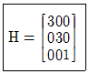
- 확대
- 회전
- 이동
- 반사
(정답률: 64%)
71. 제품의 모델(model)과 그에 관련된 데이터 교환에 관한 표준 데이터 형식이 아닌 것은?
- STEP
- IGES
- DXF
- DWG
(정답률: 72%)
72. 구멍(hole), 슬롯(slot), 포켓(pocket) 등의 형상단위를 라이브러리(library)에 미리 갖추어 놓고 필요 시 이들의 치수를 변화시켜 설계에 사용하는 모델링 방식은?
- Parametric modeling
- Feature-based modeling
- Solid modeling
- Boolean operation modeling
(정답률: 60%)
73. Bezier 곡선방정식의 특징으로서 적당하지 않는 것은?
- 생성되는 곡선은 다각형의 시작점과 끝점을 반드시 통과해야 한다.
- 다각형의 첫째 선분은 시작점의 접선벡터와 같은 방향이고, 마지막 선분은 끝점의 접선벡터와 같은 방향이다.
- 다각형의 꼭짓점의 순서를 거꾸로 하여 곡선을 생성하여도 같은 곡선을 생성하여야 한다.
- 꼭짓점의 한 곳이 수정될 경우 그 점을 중심으로 일부만 수정이 가능하므로 곡선의 국부적인 조정이 가능하다.
(정답률: 64%)
74. 모델링 방법 가운데 블록, 육면체, 구, 원통과 같은 기초 형상을 조합하여, Boolean 연산에 의해서 모델링하는 방법은?
- CSG(Constructive Solid Geometry)
- B-rep(Boundary Representation)
- Wire Frame
- Patch modeling
(정답률: 69%)
75. 미국 표준협회에서 제정한 코드로 ‘미국정보교환표준부호’라는 의미를 지니고 있으며 7비트 혹은 8비트로 한 문자를 표시하는 코드는?
- GRAY Code
- BCD Code
- ASCII Code
- EBCDIC Code
(정답률: 72%)
76. 다음 설명에 해당하는 것은?
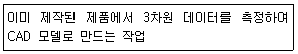
- Reverse engineering
- Feature-based engineering
- Digital Mock-Up
- Virtual Manufacturing
(정답률: 65%)
77. 컬러모니터에 사용하는 3가지 기본 색상에 포함되지 않는 것은?
- 빨강
- 노랑
- 파랑
- 초록
(정답률: 67%)
78. 4개의 경계곡선이 주어지는 경우, 경계곡선(boundary curve) 내부를 부드러운 곡선으로 채워 정의되는 곡면은?
- Coons 곡면
- Bezier 곡면
- Ferguson 곡면
- Sweep 곡면
(정답률: 69%)
79. 그래픽 디스플레이에서 스토리지형 디스플레이의 특징이 아닌 것은?
- 해상도가 우수하다.
- 밝기와 선명도가 낮다.
- 플리커 현상이 발생하지 않는다.
- 애니메이션에 적합하다.
(정답률: 38%)
80. 서피스 모델에서 사용되는 기본곡면의 종류에 속하지 않는 것은?
- Revolved surface
- Topology surface
- Sweep surface
- Bezier surface
(정답률: 55%)